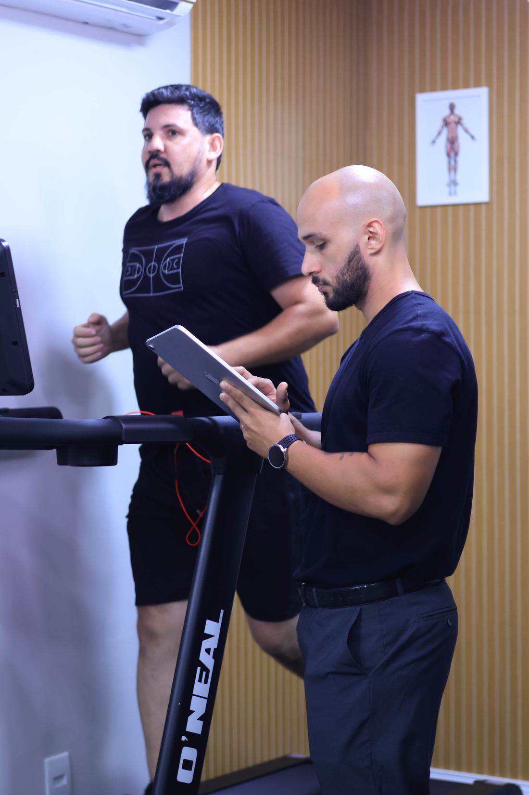
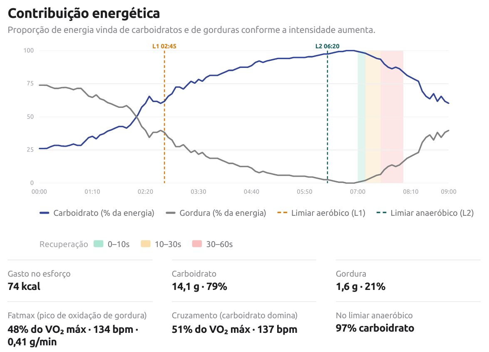
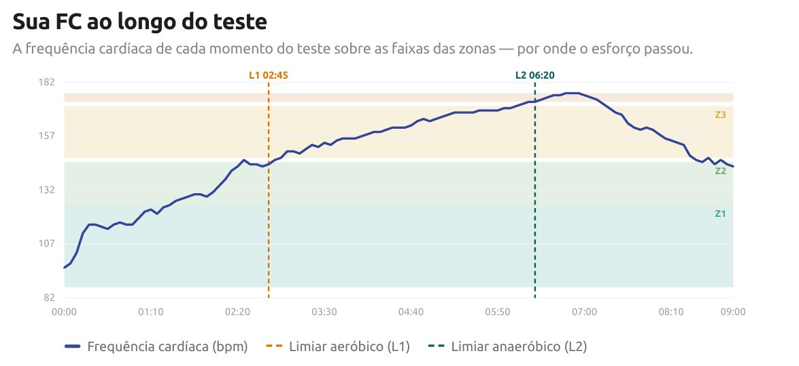

Avaliação, prescrição e acompanhamento com dados reais do seu corpo, tudo conectado no app Clutch. Para quem quer um treinador e para quem já tem um e precisa de dados melhores.

Eu avalio, monto o seu treino no app Clutch e ajusto conforme os números mudam. Corrida, força, emagrecimento ou saúde.
Ver planos →O relatório é seu. Entrego limiares, zonas e pontos de atenção prontos para o seu treinador ou assessoria usar. Seu treino continua com quem você já confia.
Teste de VO₂ máx →Avalio os seus atletas e devolvo os dados organizados para você prescrever. Para grupos, existe o Performance Day.
Falar sobre parceria →O treino certo é o que faz sentido para você agora. A forma mais segura de saber isso é medindo.
Teste de esforço com ventilometria na esteira, força, dobras cutâneas e mobilidade, na Clínica Vitallitè.
Zonas de frequência cardíaca, pace por intensidade, cargas e prioridades. Cada número vira uma decisão.
Treino no app Clutch, acompanhamento e reavaliação no fim do ciclo para mudar o plano na hora certa.

Os dois limiares mostram onde o leve vira moderado e onde o moderado vira forte. Deles saem as suas zonas e o seu pace.

Quanto vem de carboidrato e de gordura em cada intensidade, e onde fica o pico de queima de gordura. Serve para render na prova e para emagrecer na intensidade certa.
// trechos de um relatório real · nome do aluno omitido
Maratonista. Treinando pelas zonas do teste.
km/h no limiar
no mesmo esforço
Avaliação em grupo para assessorias, boxes, academias e empresas. A partir de R$ 179,90 por atleta, mínimo de 10.
Você treina com o vídeo de cada exercício e acompanha os seus resultados. Eu vejo o que acontece e ajusto no momento certo.

“Sou cliente da AJR há 3 anos e só tenho a agradecer. Sou ex-atleta de basquete e, em um quadro de condropatia grau 4, eles fizeram ajustes que realmente fizeram diferença no meu dia a dia.”
“Ótimo profissional, tirando todas as dúvidas e explicando cada procedimento com detalhes. Realizei o teste de VO2. Um baita investimento, recomendo demais!”
“Avaliação física completa para entender seu momento e traçar objetivos. O Aldemir é um profissional competente e com muita experiência.”
Profissional de Educação Física e ex-atleta de judô. Atendo de iniciantes a maratonistas com o mesmo princípio: medir antes de prescrever e mudar o plano quando os números mostram que é hora.
Pode, e é um dos usos mais comuns. Você recebe o relatório com limiares, zonas e pontos de atenção para o seu treinador usar. Eu não mexo no seu treino.
Não. A avaliação mostra o ponto de partida e o treino começa nele, com segurança.
O Performance é presencial em Bauru, com avaliação completa, teste de VO₂ e 90 dias de acompanhamento. O Online é 100% remoto: avaliação e treino pelo app Clutch, sem fidelidade.
Não. Atendo quem quer correr melhor, ganhar força, emagrecer ou cuidar da saúde. O método é o mesmo.
Na Clínica Vitallitè, Rua Gérson França, 18-28, Jd. Estoril, Bauru-SP. Abrir no mapa.
Me conta o seu objetivo, e se você já tem treinador, no WhatsApp. Eu indico o melhor caminho.